Installing and viewing plugins in Red Hat Developer Hub
Installing plugins in Red Hat Developer Hub
Abstract
- 1. Install dynamic plugins in Red Hat Developer Hub
- 1.1. Install dynamic plugins with the Red Hat Developer Hub Operator
- 1.2. Dynamic plugins dependency management
- 1.3. Installing dynamic plugins using the Helm chart
- 1.4. Example Helm chart configurations for dynamic plugin installations
- 1.5. Installing dynamic plugins in an air-gapped environment
- 1.6. Mirror Red Hat Developer Hub dynamic plugins in disconnected environments
- 2. Install plugins from OCI registries by using custom certificates
- 3. Custom plugins in Red Hat Developer Hub
- 3.1. Export custom plugins in Red Hat Developer Hub
- 3.2. Package and publish custom plugins as dynamic plugins
- 3.3. Install custom plugins in Red Hat Developer Hub
- 3.4. Example of installing a custom plugin in Red Hat Developer Hub
- 3.5. Add a custom dynamic plugin to Red Hat Developer Hub
- 3.6. Display the front-end plugin
- 4. Using the dynamic plugin factory to convert plugins into dynamic plugins
- 5. Enable plugins added in the RHDH container image
- 6. Extensions in Red Hat Developer Hub
- 7. Troubleshoot a pod startup failure after enabling a plugin
- 8. Front-end plugin wiring
- 8.1. Understanding front-end plugin wiring
- 8.2. Extend internal icon catalog
- 8.3. Define dynamic routes for new plugin pages
- 8.4. Customizing menu items in the sidebar navigation
- 8.5. Binding to existing plugins
- 8.6. Using mount points
- 8.7. Customizing and extending entity tabs
- 8.8. Using a custom SignInPage component
- 8.9. Providing custom Scaffolder field extensions
- 8.10. Providing additional utility APIs
- 8.11. Adding custom authentication provider settings
- 8.12. Providing custom TechDocs add-ons
- 8.13. Customizing Red Hat Developer Hub theme
- 9. Use plugin indicators and support types in the Red Hat Developer Hub
Administrative users can install and configure plugins to enable other users to use plugins to extend Red Hat Developer Hub (RHDH) functionality.
1. Install dynamic plugins in Red Hat Developer Hub
The backend plugin manager package provides dynamic plugin support. This service scans a configured root directory (dynamicPlugins.rootDirectory in the app-config.yaml file) for dynamic plugin packages and loads them dynamically.
You can use the dynamic plugins that come preinstalled with Red Hat Developer Hub or install external dynamic plugins from a public NPM registry.
1.1. Install dynamic plugins with the Red Hat Developer Hub Operator
You can store the configuration for dynamic plugins in a ConfigMap object that your Backstage custom resource (CR) can reference.
Dynamic plugins might require you to configure certain Kubernetes resources. The documentation refers to these resources as plugin dependencies. For more information, see Dynamic plugins dependency management.
In Red Hat Developer Hub (RHDH), you can automatically create these resources when you apply the Backstage CR to the cluster.
If the pluginConfig field references environment variables, you must define the variables in your <my_product_secrets> secret.
Procedure
- From the OpenShift Container Platform web console, select the ConfigMaps tab.
- Click Create ConfigMap.
From the Create ConfigMap page, select the YAML view option in Configure via and edit the file, if needed.
The following example shows a
ConfigMapobject using the GitHub dynamic plugin:kind: ConfigMap apiVersion: v1 metadata: name: dynamic-plugins-rhdh data: dynamic-plugins.yaml: | includes: - dynamic-plugins.default.yaml plugins: - package: './dynamic-plugins/dist/backstage-plugin-catalog-backend-module-github-dynamic' disabled: false pluginConfig: catalog: providers: github: organization: "${GITHUB_ORG}" schedule: frequency: { minutes: 1 } timeout: { minutes: 1 } initialDelay: { seconds: 100 }- Click Create.
- Go to the Topology view.
Click the overflow menu for the Red Hat Developer Hub instance that you want to use and select Edit Backstage to load the YAML view of the Red Hat Developer Hub instance.
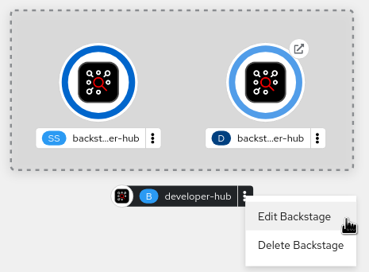
Add the
dynamicPluginsConfigMapNamefield to yourBackstageCR. For example:apiVersion: rhdh.redhat.com/v1alpha5 kind: Backstage metadata: name: my-rhdh spec: application: dynamicPluginsConfigMapName: dynamic-plugins-rhdh- Click Save.
- Navigate back to the Topology view and wait for the Red Hat Developer Hub pod to start.
- Click the Open URL icon to start using the Red Hat Developer Hub platform with the new configuration changes.
Verification
Ensure that the system loads the dynamic plugins configuration, by appending
/api/dynamic-plugins-info/loaded-pluginsto your Red Hat Developer Hub root URL and checking the list of plugins:The following example shows a list of plugins:
[ { "name": "backstage-plugin-catalog-backend-module-github-dynamic", "version": "0.5.2", "platform": "node", "role": "backend-plugin-module" }, { "name": "backstage-plugin-techdocs", "version": "1.10.0", "role": "frontend-plugin", "platform": "web" }, { "name": "backstage-plugin-techdocs-backend-dynamic", "version": "1.9.5", "platform": "node", "role": "backend-plugin" }, ]
1.2. Dynamic plugins dependency management
Dynamic plugins configured for the Backstage custom resource (CR) might require Kubernetes resources called plugin dependencies, which RHDH creates automatically when you apply the CR.
1.2.1. Cluster level plugin dependencies configuration
You can configure plugin dependencies by including the required Kubernetes resources in the /config/profile/{PROFILE}/plugin-deps directory. You must add the required resources as Kubernetes manifests in YAML format in the plugin-deps directory.
Example showing how to add example-dep1.yaml and example-dep2.yaml as plugin dependencies:
config/
profile/
rhdh/
kustomization.yaml
plugin-deps/
example-dep1.yaml
example-dep2.yaml- If a resource manifest does not specify a namespace, the Operator creates it in the namespace of the Backstage CR.
- Resources can contain {{backstage-name}} and {{backstage-ns}} placeholders. The Operator replaces the {{backstage-name}} placeholder with the name of the Backstage CR, and replaces the {{backstage-ns}} placeholder with the namespace of the Backstage CR.
The kustomization.yaml file must contain the following lines:
configMapGenerator:
- files:
- plugin-deps/example-dep1.yaml
- plugin-deps/example-dep2.yaml
name: plugin-deps1.2.2. Plugin dependencies infrastructure
To install infrastructural resources that plugin dependencies require, for example, other Operators or custom resources (CR), you can include these in the /config/profile/{PROFILE}/plugin-infra directory.
To create these infrastructural resources (along with the Operator deployment), use the make plugin-infra command.
On a production cluster, use this command with caution as it might reconfigure cluster-scoped resources.
1.2.3. Plugin configuration
You must reference the plugin dependencies in the dependencies field of the plugin configuration when you apply the Backstage CR.
The Operator creates the resources that the files in the plugin-deps directory describe.
You can reference plugin dependencies in the dynamic-plugins ConfigMap that can either be part of the default profile configuration for all Backstage custom resources or part of the ConfigMap referenced in the Backstage CR. In Red Hat Developer Hub, you can include plugin dependencies in the dynamic plugin configuration.
Each dependencies.ref value can either match the full file name or serve as a prefix for the file name. The Operator creates the resources that the files in the plugin-deps directory describe that start with the specified ref value or exactly match it
Example showing how to add example-dep plugin dependency:
apiVersion: v1
kind: ConfigMap
metadata:
name: default-dynamic-plugins
data:
dynamic-plugins.yaml: |
includes:
- dynamic-plugins.default.yaml
plugins:
- disabled: false
package: "path-or-url-to-example-plugin"
dependencies:
- ref: example-dep1.3. Installing dynamic plugins using the Helm chart
You can deploy a Developer Hub instance by using a Helm chart, which is a flexible installation method. With the Helm chart, you can load dynamic plugins into your Developer Hub instance without having to recompile your code or rebuild the container.
To install dynamic plugins in Developer Hub using Helm, add the following global.dynamic parameters in your Helm chart:
plugins: the dynamic plugins list intended for installation. By default, the list is empty. You can populate the plugins list with the following fields:-
package: a package specification for the dynamic plugin package that you want to install. You can use a package for either a local or an external dynamic plugin installation. For a local installation, use a path to the local folder containing the dynamic plugin. For an external installation, use a package specification from a public NPM repository. -
integrity(required for external packages): an integrity checksum in the form of<alg>-<digest>specific to the package. Supported algorithms includesha256,sha384andsha512. -
pluginConfig: an optional plugin-specificapp-config.yamlYAML fragment. See plugin configuration for more information. -
disabled: disables the dynamic plugin if set totrue. Default:false. -
forceDownload: Set the value totrueto force a reinstall of the plugin, bypassing the cache. The default value isfalse. pullPolicy: Similar to theforceDownloadparameter and is consistent with other image container platforms. You can use one of the following values for this key:-
Always: This value compares the image digest in the remote registry and downloads the artifact if it has changed, even if you downloaded the plugin before. IfNotPresent: This value downloads the artifact if it is not already present in the dynamic-plugins-root folder, without checking image digests.NoteThe
pullPolicysetting is also applied to the NPM downloading method, althoughAlwayswill download the remote artifact without a digest check. The existingforceDownloadoption remains functional, however, thepullPolicyoption takes precedence. TheforceDownloadoption might be deprecated in a future Developer Hub release.
-
-
-
includes: a list of YAML files using the same syntax.
The system merges the plugins list in the includes file with the plugins list in the main Helm values. If both plugins lists mention a plugin package, the plugins fields in the main Helm values override the plugins fields in the includes file. The default configuration has the dynamic-plugins.default.yaml file, which has all of the dynamic plugins preinstalled in Developer Hub, whether enabled or disabled by default.
1.4. Example Helm chart configurations for dynamic plugin installations
The following examples show how to configure the Helm chart for specific types of dynamic plugin installations.
Configuring a local plugin and an external plugin when the external plugin requires a specific configuration:
global:
dynamic:
plugins:
- package: <alocal package-spec used by npm pack>
- package: <external package-spec used by npm pack>
integrity: sha512-<some hash>
pluginConfig: ...Disabling a plugin from an included file:
global:
dynamic:
includes:
- dynamic-plugins.default.yaml
plugins:
- package: <some imported plugins listed in dynamic-plugins.default.yaml>
disabled: trueEnabling a plugin from an included file:
global:
dynamic:
includes:
- dynamic-plugins.default.yaml
plugins:
- package: <some imported plugins listed in dynamic-plugins.custom.yaml>
disabled: falseEnabling a plugin that an included file disables:
global:
dynamic:
includes:
- dynamic-plugins.default.yaml
plugins:
- package: <some imported plugins listed in dynamic-plugins.custom.yaml>
disabled: false1.5. Installing dynamic plugins in an air-gapped environment
You can install external plugins in an air-gapped environment by setting up a custom NPM registry.
You can configure the NPM registry URL and authentication information for dynamic plugin packages by using a Helm chart. For dynamic plugin packages obtained through npm pack, you can use a .npmrc file.
Using the Helm chart, add the .npmrc file to the NPM registry by creating a secret. For example:
apiVersion: v1
kind: Secret
metadata:
name: <release_name>-dynamic-plugins-npmrc
type: Opaque
stringData:
.npmrc: |
registry=<registry_link>
//<registry_link>:_authToken=<auth_token>
...
Replace <release_name> with your Helm release name. This name is a unique identifier for each chart installation in the Kubernetes cluster.
1.6. Mirror Red Hat Developer Hub dynamic plugins in disconnected environments
Red Hat Developer Hub (RHDH) uses dynamic plugins that Red Hat distributes as Open Container Initiative (OCI) artifacts. In disconnected or restricted environments, you must mirror these plugin artifacts to a registry accessible by your cluster.
To mirror dynamic plugin OCI artifacts for deployments in restricted environments, use the mirror-plugins.sh script.
1.6.1. Prerequisites
- You have installed Skopeo 1.20 or later. Use Skopeo for multi-arch image operations and manifest conversion.
-
You have installed
tar1.35 or later. Use GNUtarfor extracting image layers. -
You have installed
jq1.7 or later. Usejqfor JSON parsing and manipulation. See Download jq. - You have installed Podman 5.6 or later. Use Podman for building catalog index images.
- You have authenticated to the source registry, for example, quay.io or registry.redhat.io for pulling plugin artifacts.
-
If mirroring directly to a registry using
--to-registry, you have authenticated to the target registry.
After mirroring completes, the script generates a rhdh-plugin-mirroring-summary.txt file containing mappings of all mirrored plugins. Use this file to reference the correct mirrored plugin URLs when configuring your RHDH deployment.
For Operator deployments, you must configure the Backstage Custom Resource with the mirrored plugin references. For Helm deployments, you must update your values file with the mirrored plugin references.
1.6.2. Mirror plugins from a catalog index to a partially disconnected environment
Use this procedure to mirror plugins from a catalog index to a partially disconnected environment.
Procedure
Download the mirroring script:
$ curl -sSLO https://raw.githubusercontent.com/redhat-developer/rhdh-operator/refs/heads/release-1.9/.rhdh/scripts/mirror-plugins.sh
Run the mirroring script by using the
bashcommand with the appropriate set of options:For example:
bash mirror-plugins.sh \ --plugin-index oci://quay.io/rhdh/plugin-catalog-index:1.9 \ --to-registry <my.registry.example.com>where:
--to-registry <my.registry.example.com>- Enter the URL for the target mirror registry where you want to mirror the catalog index.
1.6.3. Mirror plugins from a catalog index to a fully disconnected environment
This two-phase process exports plugins to disk from a connected host, transfers them to a restricted network, then imports them to your internal registry.
Procedure
Download the mirroring script:
$ curl -sSLO https://raw.githubusercontent.com/redhat-developer/rhdh-operator/refs/heads/release-1.9/.rhdh/scripts/mirror-plugins.sh
Export all plugins to a local directory:
For example:
bash mirror-plugins.sh \ --plugin-index oci://registry.access.redhat.com/rhdh/plugin-catalog-index:1.9 \ --to-dir </tmp/rhdh-plugins>where:
--to-dir </tmp/rhdh-plugins>- Enter the local directory path.
Import and push the plugins from the local directory to your internal registry:
For example:
bash mirror-plugins.sh \ --from-dir /tmp/rhdh-plugins \ --to-registry <my.registry.example.com>where:
--from-dir </tmp/rhdh-plugins>- Enter the local directory path.
--to-registry <my.registry.example.com>- Enter the URL for the target mirror registry where you want to mirror the catalog index.
1.6.4. Mirror specific plugins by direct reference
Use this procedure to mirror specific plugins by specifying their OCI URLs directly.
Procedure
Download the mirroring script:
$ curl -sSLO https://raw.githubusercontent.com/redhat-developer/rhdh-operator/refs/heads/release-1.9/.rhdh/scripts/mirror-plugins.sh
To mirror individual plugins by specifying their OCI URLs directly, run the mirroring script by using the
bashcommand with the appropriate set of options:For example:
bash mirror-plugins.sh \ --plugins oci://quay.io/rhdh-plugin-catalog/backstage-community-plugin-quay:1.8.0--1.22.1 \ oci://quay.io/rhdh-plugin-catalog/backstage-community-plugin-github-actions:1.8.0--0.11.1 \ --to-registry <my.registry.example.com>where:
--to-registry <my.registry.example.com>- Enter the URL for the target mirror registry where you want to mirror the catalog index.
1.6.5. Mirror plugins from a file
Use this procedure to mirror plugins from a file containing a list of plugin URLs.
Procedure
Create a text file listing the plugins to mirror (one per line), as follows:
Example
plugins.txtfile:oci://quay.io/rhdh-plugin-catalog/backstage-community-plugin-quay:1.8.0--1.22.1 oci://quay.io/rhdh-plugin-catalog/backstage-community-plugin-github-actions:1.8.0--0.11.1 oci://quay.io/rhdh-plugin-catalog/backstage-community-plugin-azure-devops:1.8.0--0.8.2
Download the mirroring script:
$ curl -sSLO https://raw.githubusercontent.com/redhat-developer/rhdh-operator/refs/heads/release-1.9/.rhdh/scripts/mirror-plugins.sh
Run the mirroring script by using the
bashcommand with the appropriate set of options:For example:
bash mirror-plugins.sh \ --plugin-list plugins.txt \ --to-registry <my.registry.example.com>where:
--plugin-list plugins.txt- A text file listing the plugins to mirror.
--to-registry <my.registry.example.com>- Enter the URL for the target mirror registry where you want to mirror the catalog index.
1.6.6. Combine many plugin sources
You can combine any of the plugin sources (for example, catalog index, plugin list file, and direct URLs) in a single mirroring operation. The script automatically deduplicates plugins if the same plugin is present in many sources.
Procedure
Download the mirroring script:
$ curl -sSLO https://raw.githubusercontent.com/redhat-developer/rhdh-operator/refs/heads/release-1.9/.rhdh/scripts/mirror-plugins.sh
To combine many plugin sources, run the mirroring script by using the
bashcommand with the appropriate set of options:For example:
bash mirror-plugins.sh \ --plugin-index oci://registry.access.redhat.com/rhdh/plugin-catalog-index:1.9 \ --plugin-list custom-plugins.txt \ --plugins 'oci://registry.internal.example.com/custom/my-plugin:1.0' \ --to-registry registry.example.comwhere:
--plugin-list custom-plugins.txt- A text file listing the plugins to mirror.
--to-registry <my.registry.example.com>- Enter the URL for the target mirror registry where you want to mirror the catalog index.
1.6.7. Additional resources
- Podman Installation Instructions
- Red Hat Container Registry Authentication :context: install-dynamic-plugins-in-rhdh
2. Install plugins from OCI registries by using custom certificates
In RHDH, you can install OCI plugins stored in an internal OCI artifact registry served over HTTPS with customer CA certificates. The following example shows a configuration in the dynamic-plugins.yaml file:
includes: - dynamic-plugins.default.yaml plugins: - disabled: false package: oci://reg.example.com:5000/myplugin:v0.0.1
2.1. Prerequisites
You have a corporate CA bundle or a set of custom container-registry TLS certificates that the system should trust.
NoteYou can create a CA bundle from a set of CA certificates manually, by concatenating them into a single file, as follows:
# Concatenate CA certificates cat registry.crt intermediate.crt corporate-root.crt > ca-bundle.crt # Validate openssl verify -CAfile ca-bundle.crt registry.crt
2.2. Install plugins from OCI plugins by using per-registry TLS configuration
Use this procedure to install plugins from OCI registries by configuring per-registry TLS certificates.
Procedure
Create a ConfigMap from the CA certificate in the namespace where you are deploying your RHDH instance:
oc create configmap registry-ca-crt --from-file=ca.crt
Mount the CA certificate ConfigMap into your RHDH configuration:
For a Helm chart installation, update your Helm chart configuration file, as follows:
upstream: backstage: extraVolumes: # IMPORTANT: Due to a Helm limitation with arrays, you must also # include all the volumes defined in the default Helm Chart # before adding the new one # ... - name: registry-ca-crt configMap: name: registry-ca-crt initContainers: - name: install-dynamic-plugins # IMPORTANT: Due to a Helm limitation with arrays, you must also # include all the other fields defined in the default Helm Chart # ... volumeMounts: # IMPORTANT: Due to a Helm limitation with arrays, you must also # include all the volume mounts defined in the default Helm Chart # before adding the new one # ... - name: registry-ca-crt # Hostname and port must match your target registry mountPath: '/etc/containers/certs.d/reg.example.com:5000'For Operator-based installations, update your Backstage Custom Resource (CR), as follows:
spec: application: extraFiles: configMaps: - name: registry-ca-crt # Hostname and port must match your target registry mountPath: '/etc/containers/certs.d/reg.example.com:5000' containers: - install-dynamic-plugins
2.3. Install plugins from OCI plugins by mounting the CA bundle
Use this procedure to install plugins from OCI registries by mounting a CA bundle.
Procedure
Create a ConfigMap from the CA bundle in the namespace where you are deploying your RHDH instance:
oc create configmap registry-ca-bundle --from-file=ca-bundle.crt
Mount the CA bundle ConfigMap into your RHDH configuration
For a Helm chart installation, update your Helm chart configuration file, as follows:
upstream: backstage: extraVolumes: # IMPORTANT: Due to a Helm limitation with arrays, you must also # include all the volumes defined in the default Helm Chart # before adding the new one # ... - name: registry-ca-bundle configMap: name: registry-ca-bundle initContainers: - name: install-dynamic-plugins # IMPORTANT: Due to a Helm limitation with arrays, you must also # include all the other fields defined in the default Helm Chart # ... volumeMounts: # IMPORTANT: Due to a Helm limitation with arrays, you must also # include all the volume mounts defined in the default Helm Chart # before adding the new one # ... - name: registry-ca-bundle mountPath: /etc/pki/tls/certs/For Operator-based installations, update your Backstage Custom Resource (CR), as follows:
spec: application: extraFiles: configMaps: - name: registry-ca-bundle mountPath: /etc/pki/tls/certs/ containers: # Note: Set to "*" instead if you want to mount it in all containers - install-dynamic-plugins
2.4. Install plugins from OCI plugins in OpenShift
Use this procedure to install plugins from OCI registries in an OpenShift environment by using cluster-wide trusted CA bundles.
Prerequisites
- Your cluster administrator must add the trusted corporate CA bundle to the cluster-wide configuration. For more information, see Security and compliance in the OpenShift Container Platform documentation.
Procedure
Create an empty ConfigMap in the namespace where you are deploying your RHDH instance. You must add the
config.openshift.io/inject-trusted-cabundlelabel to your ConfigMap, as follows:apiVersion: v1 kind: ConfigMap metadata: name: trusted-ca labels: config.openshift.io/inject-trusted-cabundle: "true"Wait for the cluster to inject the trusted CA bundle into the ConfigMap. You can verify with the following command:
oc get cm trusted-ca
You should see a block of certificates under the
ca-bundle.crtkey.Mount the ConfigMap into the
/etc/pki/ca-trust/extracted/pempath of the RHDH init container.For a Helm chart installation, update your Helm chart configuration file, as follows:
upstream: backstage: extraVolumes: # IMPORTANT: Due to a Helm limitation with arrays, you must also # include all the volumes defined in the default Helm Chart # before adding the new one # ... - name: trusted-ca configMap: name: trusted-ca initContainers: - name: install-dynamic-plugins # IMPORTANT: Due to a Helm limitation with arrays, you must also # include all the other fields defined in the default Helm Chart # ... volumeMounts: # IMPORTANT: Due to a Helm limitation with arrays, you must also # include all the volume mounts defined in the default Helm Chart # before adding the new one # ... - name: trusted-ca mountPath: /etc/pki/ca-trust/extracted/pemFor Operator-based installations, update your Backstage Custom Resource (CR), as follows:
spec: application: extraFiles: configMaps: - name: trusted-ca mountPath: /etc/pki/ca-trust/extracted/pem containers: # Note: Set to "*" instead if you want to mount it in all containers - install-dynamic-plugins
3. Custom plugins in Red Hat Developer Hub
You can integrate custom dynamic plugins into Red Hat Developer Hub to enhance its functionality without modifying its source code or rebuilding it. To add these plugins, export them as derived packages.
While exporting the plugin package, you must ensure that dependencies are correctly bundled or marked as shared, depending on their relationship to the Developer Hub environment.
To integrate a custom plugin into Developer Hub:
- First, obtain the plugin’s source code.
- Export the plugin as a dynamic plugin package.
- Package and publish the dynamic plugin.
- Install the plugin in the Developer Hub environment.
3.1. Export custom plugins in Red Hat Developer Hub
To use plugins in Red Hat Developer Hub, you can export plugins as derived dynamic plugin packages. These packages contain the plugin code and dependencies, ready for dynamic plugin integration into Developer Hub.
Prerequisites
You have installed the
@red-hat-developer-hub/clipackage. Use the latest version (@latesttag) for compatibility with the most recent features and fixes.NoteUse the
npx @red-hat-developer-hub/cli@latest plugin exportcommand to export an existing custom plugin as a derived dynamic plugin package.You must use this command when you have the source code for a custom plugin and want to integrate it into RHDH as a dynamic plugin.
The command processes the plugin’s source code and dependencies and generates the necessary output for dynamic loading by RHDH.
For an example of using this command, see Example of installing a custom plugin in Red Hat Developer Hub.
- You have installed and configured Node.js and NPM.
- The custom plugin is compatible with your Red Hat Developer Hub version. For more information, see Version compatibility matrix.
The custom plugin must have a valid
package.jsonfile in its root directory, containing all required metadata and dependencies.- Backend plugins
To ensure compatibility with the dynamic plugin support and enable their use as dynamic plugins, existing backend plugins must be compatible with the new Backstage backend system. Additionally, these plugins must be rebuilt using a dedicated CLI command.
You must export the new Backstage backend system entry point (created using
createBackendPlugin()orcreateBackendModule()) as the default export from either the main package or analphapackage. Export as analphapackage if the plugin instance support still usesalphaAPIs. This does not add any additional requirement on top of the standard plugin development guidelines of the plugin instance.The dynamic export mechanism identifies private dependencies and sets the
bundleDependenciesfield in thepackage.jsonfile. This export mechanism ensures that you publish the dynamic plugin package as a self-contained package, with its private dependencies bundled in a privatenode_modulesfolder.Certain plugin dependencies require specific handling in the derived packages, such as:
Shared dependencies: The RHDH application provides these dependencies and lists them as
peerDependenciesin thepackage.jsonfile. The dynamic plugin package does not bundle shared dependencies. For example, by default, all@backstagescoped packages use sharing.You can use the
--shared-packageflag to specify shared dependencies that Red Hat Developer Hub application provides and that the dynamic plugin package does not bundle.To treat a
@backstagepackage as private, use the negation prefix (!). For example, when a plugin depends on the package in@backstagethat is not provided by the Red Hat Developer Hub application.Embedded dependencies: The dynamic plugin package bundles these dependencies with their dependencies hoisted to the top level. By default, the package embeds packages with
-nodeor-commonsuffixes.You can use the
--embed-packageflag to specify additional embedded packages. For example, packages from the same workspace that do not follow the default naming convention.The following is an example of exporting a dynamic plugin with shared and embedded packages:
$ npx @red-hat-developer-hub/cli@latest plugin export --shared-package '!/@backstage/plugin-notifications/' --embed-package @backstage/plugin-notifications-backend
In the earlier example:
-
The export treats the
@backstage/plugin-notificationspackage as a private dependency and bundles it in the dynamic plugin package, despite being in the@backstagescope. -
The export marks the
@backstage/plugin-notifications-backendpackage as an embedded dependency and bundles it in the dynamic plugin package.
- Front-end plugins
Front-end plugins can use
scalprumfor configuration. The CLI can generate this configuration automatically during the export process. When running the following command, the CLI logs the generated default configuration:$ npx @red-hat-developer-hub/cli@latest plugin export
The following is an example of default
scalprumconfiguration:"scalprum": { "name": "<package_name>", // The Webpack container name matches the NPM package name, with "@" replaced by "." and "/" removed. "exposedModules": { "PluginRoot": "./src/index.ts" // The default module name is "PluginRoot" and doesn't need explicit specification in the app-config.yaml file. } }You can add a
scalprumsection to thepackage.jsonfile. For example:"scalprum": { "name": "custom-package-name", "exposedModules": { "BazModuleName": "./src/baz.ts", "QuxModuleName": "./src/qux.ts" // Define multiple modules here, with each exposed as a separate entry point in the Webpack container. } }Dynamic plugins might need adjustments for Developer Hub needs, such as static JSX for mountpoints or dynamic routes. These changes are optional but might be incompatible with static plugins.
To include static JSX, define an additional export and use it as the dynamic plugin’s
importName. For example:// For a static plugin $ export const EntityTechdocsContent = () => {...} // For a dynamic plugin $ export const DynamicEntityTechdocsContent = { element: EntityTechdocsContent, staticJSXContent: ( <TechDocsAddons> <ReportIssue /> </TechDocsAddons> ), };
Procedure
Use the
plugin exportcommand from the@red-hat-developer-hub/clipackage to export the plugin:$ npx @red-hat-developer-hub/cli@latest plugin export
Ensure that you run the earlier command in the root directory of the plugin’s JavaScript package (containing
package.jsonfile).The
dist-dynamicsubdirectory has the resulting derived package. The exported package name consists of the original plugin name with-dynamicappended.WarningDo not publish the derived dynamic plugin JavaScript packages to the public NPM registry. For more appropriate packaging options, see Section 3.2, “Package and publish custom plugins as dynamic plugins”. If you must publish to the NPM registry, use a private registry.
3.2. Package and publish custom plugins as dynamic plugins
After exporting a custom plugin, you can package the derived package into one of the following supported formats:
- Open Container Initiative (OCI) image (recommended)
- TGZ file
JavaScript package
ImportantYou must publish exported dynamic plugin packages only to private NPM registries.
3.2.1. Create an OCI image with dynamic packages
Use this procedure to package a dynamic plugin as an OCI image and push it to a container registry.
Prerequisites
-
You have installed
podmanordocker.
Procedure
-
Navigate to the plugin’s root directory (not the
dist-dynamicdirectory). Run the following command to package the plugin into an OCI image:
$ npx @red-hat-developer-hub/cli@latest plugin package --tag quay.io/example/image:v0.0.1
In the earlier command, the
--tagargument specifies the image name and tag.Run one of the following commands to push the image to a registry:
$ podman push quay.io/example/image:v0.0.1
$ docker push quay.io/example/image:v0.0.1
The output of the
package-dynamic-pluginscommand provides the plugin’s path for use in thedynamic-plugin-config.yamlfile.
3.2.2. Create a TGZ file with dynamic packages
Use this procedure to package a dynamic plugin as a TGZ file and host it on a web server.
Prerequisites
package-and-publish-plugins-as-dynamic-plugins
Procedure
-
Navigate to the
dist-dynamicdirectory. Run the following command to create a
tgzarchive:$ npm pack
You can obtain the integrity hash from the output of the
npm packcommand by using the--jsonflag as follows:$ npm pack --json | head -n 10
Host the archive on a web server accessible to your RHDH instance, and reference its URL in the
dynamic-plugin-config.yamlfile as follows:plugins: - package: https://example.com/backstage-plugin-myplugin-1.0.0.tgz integrity: sha512-<hash>Run the following command to package the plugins:
$ npm pack --pack-destination ~/test/dynamic-plugins-root/
TipTo create a plugin registry using HTTP server on OpenShift Container Platform, run the following commands:
$ oc project my-rhdh-project $ oc new-build httpd --name=plugin-registry --binary $ oc start-build plugin-registry --from-dir=dynamic-plugins-root --wait $ oc new-app --image-stream=plugin-registry
Configure your RHDH to use plugins from the HTTP server by editing the
dynamic-plugin-config.yamlfile:plugins: - package: http://plugin-registry:8080/backstage-plugin-myplugin-1.9.6.tgz
3.2.3. Create a JavaScript package with dynamic packages
Use this procedure to publish a dynamic plugin to a private NPM registry.
Do not publish the derived dynamic plugin JavaScript packages to the public NPM registry. If you must publish to the NPM registry, use a private registry.
Procedure
-
Navigate to the
dist-dynamicdirectory. Run the following command to publish the package to your private NPM registry:
$ npm publish --registry <npm_registry_url>
TipYou can add the following to your
package.jsonfile before running theexportcommand:{ "publishConfig": { "registry": "<npm_registry_url>" } }If you change
publishConfigafter exporting the dynamic plugin, re-run theplugin exportcommand to ensure that the correct configuration is in the package.
3.3. Install custom plugins in Red Hat Developer Hub
You can install a custom plugins in Red Hat Developer Hub without rebuilding the RHDH application.
The location of the dynamic-plugin-config.yaml file depends on the deployment method.
The plugins array within the dynamic-plugin-config.yaml file defines plugins. Each object in the array represents a plugin with the following properties:
-
package: The plugin’s package definition, which can be an OCI image, a TGZ file, a JavaScript package, or a directory path. -
disabled: A boolean value indicating whether you enable or disable the plugin. -
integrity: The integrity hash of the package, required for TGZ file and JavaScript packages. -
pluginConfig: The plugin’s configuration. For backend plugins, this is optional; for front-end plugins, you must include it. ThepluginConfigis a fragment of theapp-config.yamlfile, and the system merges any added properties with the RHDHapp-config.yamlfile.
You can also load dynamic plugins from another directory, though development or testing purposes use this method and it is not recommended for production, except for plugins included in the RHDH container image.
3.3.1. Load a plugin packaged as an OCI image
Use this procedure to load a dynamic plugin from an OCI image into Red Hat Developer Hub.
Prerequisites
You packaged the custom plugin as a dynamic plugin in an OCI image.
For more information about packaging a custom plugin, see Section 3.2, “Package and publish custom plugins as dynamic plugins”.
Procedure
To retrieve plugins from an authenticated registry, complete the following steps:
Log in to the container image registry.
podman login <registry>
Verify the content of the
auth.jsonfile created after the login.cat ${XDG_RUNTIME_DIR:-~/.config}/containers/auth.jsonCreate a secret file using the following example:
oc create secret generic _<secret_name>_ --from-file=auth.json=${XDG_RUNTIME_DIR:-~/.config}/containers/auth.json 1-
For an Operator-based deployment, replace <secret_name> with
dynamic-plugins-registry-auth. -
For a Helm-based deployment, replace <secret_name> with
<Helm_release_name>_-dynamic-plugins-registry-auth.
-
For an Operator-based deployment, replace <secret_name> with
Define the plugin with the
oci://prefix by using one of the following formats in yourdynamic-plugins.yamlfile:- Standard definition
Use the format
oci://<image_name>:<tag>, as shown in the following example. The installation program automatically extracts the plugin path from the image metadata.Example configuration in
dynamic-plugins.yamlfile:plugins: - disabled: false package: oci://quay.io/example/image:v1.0.0NoteYou must package images with the
@red-hat-developer-hub/clito ensure the system applies theio.backstage.dynamic-packagesannotation.You must define exactly one plugin from that OCI image in the configuration files. The system returns an error if the configuration files contain many plugins or no matching plugins.
- Using image digests
To perform an integrity check, use the image digest in place of the tag in the
dynamic-plugins.yamlfile as shown in the following example:Example configuration in
dynamic-plugins.yamlfile:plugins: - disabled: false package: oci://quay.io/example/image@sha256:28036abec4dffc714394e4ee433f16a59493db8017795049c831be41c02eb5dc- Using version inheritance
To inherit a version from a base configuration file, for example,
dynamic-plugins.default.yaml, use the{{inherit}}placeholder to inherit thev0.0.2tag, as shown in the following example:Example configuration in
dynamic-plugins.default.yamlfile:plugins: - disabled: false package: oci://quay.io/example/image:v0.0.2Example configuration in
dynamic-plugins.yamlfile:includes: - dynamic-plugins.default.yaml plugins: - disabled: false package: oci://quay.io/example/image:{{inherit}}NoteAn error occurs if you use
{{inherit}}in the includes file itself or if no matching plugin key exists in the base configuration.
- To apply the changes, restart the RHDH application.
3.3.2. Load a plugin packaged as a TGZ file
Use this procedure to load a dynamic plugin from a TGZ file into Red Hat Developer Hub.
Prerequisites
You have packaged the custom plugin as a dynamic plugin in a TGZ file.
For more information about packaging a custom plugin, see Section 3.2, “Package and publish custom plugins as dynamic plugins”.
Procedure
Specify the archive URL and its integrity hash in the
dynamic-plugins.yamlfile using the following example:plugins: - disabled: false package: https://example.com/backstage-plugin-myplugin-1.0.0.tgz integrity: sha512-9WlbgEdadJNeQxdn1973r5E4kNFvnT9GjLD627GWgrhCaxjCmxqdNW08cj+Bf47mwAtZMt1Ttyo+ZhDRDj9PoA==- To apply the changes, restart the RHDH application.
3.3.3. Load a plugin packaged as a JavaScript package
Use this procedure to load a dynamic plugin from a JavaScript package into Red Hat Developer Hub.
Prerequisites
You have packaged the custom plugin as a dynamic plugin in a JavaScript package.
For more information about packaging a custom plugin, see Section 3.2, “Package and publish custom plugins as dynamic plugins”.
Procedure
Run the following command to obtain the integrity hash from the NPM registry:
$ npm view --registry <registry_link> <npm_package>@<version> dist.integrity
Specify the package name, version, and its integrity hash in the
dynamic-plugins.yamlfile as follows:plugins: - disabled: false package: @example/backstage-plugin-myplugin@1.0.0 integrity: sha512-9WlbgEdadJNeQxdn1973r5E4kNFvnT9GjLD627GWgrhCaxjCmxqdNW08cj+Bf47mwAtZMt1Ttyo+ZhDRDj9PoA==If you are using a custom NPM registry, create a
.npmrcfile with the registry URL and authentication details:registry=<registry_link> //<registry_link>:_authToken=<auth_token>
When using OpenShift Container Platform or Kubernetes:
Use the Helm chart to add the
.npmrcfile by creating a secret. For example:apiVersion: v1 kind: Secret metadata: name:
<release_name>-dynamic-plugins-npmrctype: Opaque stringData: .npmrc: | registry=<registry_link> //<registry_link>:_authToken=<auth_token>Replace
<release_name>with your Helm release name. This name is a unique identifier for each chart installation in the Kubernetes cluster.For RHDH Helm chart, name the secret using the following format for automatic mounting:
<release_name>-dynamic-plugins-npmrc
- To apply the changes, restart the RHDH application.
3.4. Example of installing a custom plugin in Red Hat Developer Hub
This example demonstrates how to package and install dynamic plugins by using the Backstage Entity Feedback community plugin that is not included in Red Hat Developer Hub pre-installed dynamic plugins.
Limitations:
You need to ensure that you build your custom plugin with a compatible version of Backstage. In Developer Hub, click Settings. Your custom plugin must be compatible with the Backstage Version (or the closest earlier version) that the Metadata section of Red Hat Developer Hub displays.
For example, if you view the history of the
backstage.jsonfile for the Entity Feedback plugin, the1fc87decommit is the closest earlier version to Backstage version of 1.39.1.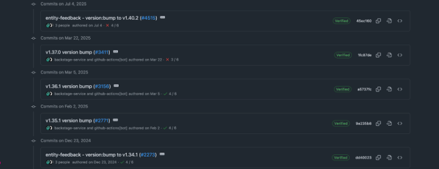
Prerequisites
- Your local environment meets the following requirements:
- Node.js: Version 22.x
- Yarn: Version 4.x
- git CLI
- jq CLI: Command-line JSON processor
- OpenShift CLI (oc): The client for interacting with your OpenShift cluster.
- Container runtime: You need either podman or docker to package the plugin into an OCI image and to log in to registries.
- Container registry access: Access to an OCI-compliant container registry, such as the internal OpenShift registry or a public registry such as Quay.io.
Procedure
Clone the source code for the Entity Feedback plugin, as follows:
$ git clone https://github.com/backstage/community-plugins.git $ cd community-plugins
Prepare your environment to build the plugin by enabling Yarn for your Node.js installation, as follows:
$ corepack enable yarn
Install the dependencies, compile the code, and build the plugins, as follows:
$ cd workspaces/entity-feedback $ yarn install $ yarn tsc $ yarn build:all
NoteAfter this step, with upstream Backstage, you publish the built plugins to a NPM or NPM-compatible registry. In this example, as you are building this plugin to support dynamic loading by Red Hat Developer Hub, you can skip the
npm publishstep that publishes the plugin to a NPM registry. Instead, you can package the plugin for dynamic loading and publish it as a container image onQuay.ioor your preferred container registry.Prepare the Entity Feedback front-end plugin by using the Red Hat Developer Hub CLI. The following command uses the plugin files in the
distfolder that theyarn build:allcommand generated, and creates a newdist-scalprumfolder that has the necessary configuration and source files to enable dynamic loading:$ cd plugins/entity-feedback $ npx @red-hat-developer-hub/cli@latest plugin export
When this command packages a front-end plugin, it uses a default Scalprum configuration if one is not found. The Scalprum configuration specifies the plugin entry point and exports, and then builds a
dist-scalprumfolder that has the dynamic plugin. The following example shows the default Scalprum configuration. However, you can add ascalprumkey to thepackage.jsonfile used by your plugin to set custom values, if necessary:{ "name": "backstage-community.plugin-entity-feedback", "exposedModules": { "PluginRoot": "./src/index.ts" } }Red Hat Developer Hub uses the following
plugin-manifest.jsonfile to load the plugin. This file is in thedist-dynamic/dist-scalprumfolder:{ "name": "backstage-community.plugin-entity-feedback", "version": "0.6.0", "extensions": [], "registrationMethod": "callback", "baseURL": "auto", "loadScripts": [ "backstage-community.plugin-entity-feedback.fd691533c03cb52c30ac.js" ], "buildHash": "fd691533c03cb52c30acbb5a80197c9d" }Package the plugin into a container image and publish it to Quay.io or your preferred container registry:
$ export QUAY_USER=replace-with-your-username $ export PLUGIN_NAME=entity-feedback-plugin $ export VERSION=$(cat package.json | jq .version -r) $ npx @red-hat-developer-hub/cli@latest plugin package \ --tag quay.io/$QUAY_USER/$PLUGIN_NAME:$VERSION $ podman login quay.io $ podman push quay.io/$QUAY_USER/$PLUGIN_NAME:$VERSION
Repeat the same steps for the backend plugin. Backend plugins do not require Scalprum, and the export generates a
dist-dynamicfolder instead of adist-scalprumfolder:$ cd ../entity-feedback-backend/ $ npx @red-hat-developer-hub/cli@latest plugin export $ export QUAY_USER=replace-with-your-username $ export PLUGIN_NAME=entity-feedback-plugin-backend $ export VERSION=$(cat package.json | jq .version -r) $ npx @red-hat-developer-hub/cli@latest plugin package \ --tag quay.io/$QUAY_USER/$PLUGIN_NAME:$VERSION $ podman push quay.io/$QUAY_USER/$PLUGIN_NAME:$VERSION
Those commands publish two container images to your container registry.
The following image shows the container images published to Quay.io:
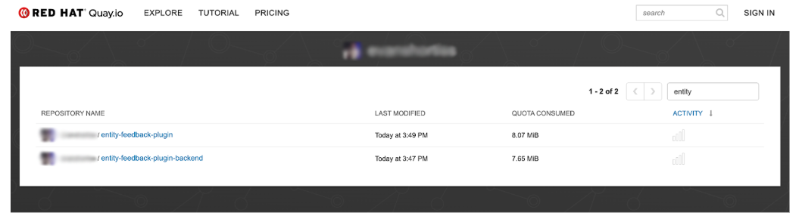
3.5. Add a custom dynamic plugin to Red Hat Developer Hub
Use this procedure to add custom dynamic plugins to Red Hat Developer Hub by updating the dynamic-plugins.yaml configuration file.
Procedure
To add your custom dynamic plugins to Red Hat Developer Hub, update the
dynamic-plugins.yamlfile by using the following configuration that thenpx @red-hat-developer-hub/cli@latest plugin packagecommand generates:plugins: - package: oci://quay.io/_<user_name>_/entity-feedback-plugin:0.5.0 disabled: false - package: oci://quay.io/_<user_name>_/entity-feedback-plugin-backend:0.6.0 disabled: falseNoteEnsure that your container images are publicly accessible, or that you have configured a pull secret in your environment. A pull secret provides Red Hat Developer Hub with credentials to authenticate pulling your plugin container images from a container registry.
3.6. Display the front-end plugin
Use this procedure to configure and display a front-end plugin in the Red Hat Developer Hub UI.
Procedure
Update the
pluginConfigsection of yourdynamic-plugins.yamlfile to specify how to add the Entity Feedback to the Red Hat Developer Hub UI.dynamic-plugins.yamlfile fragment- package: oci://quay.io/_<user_name>_/entity-feedback-plugin:0.5.0 disabled: false pluginConfig: dynamicPlugins: frontend: backstage-community.plugin-entity-feedback: entityTabs: - mountPoint: entity.page.feedback path: /feedback title: Feedback mountPoints: - config: layout: gridColumn: 1 / -1 importName: StarredRatingButtons mountPoint: entity.page.feedback/cards - config: layout: gridColumn: 1 / -1 importName: EntityFeedbackResponseContent mountPoint: entity.page.feedback/cards - config: layout: gridColumnEnd: lg: span 6 md: span 6 xs: span 6 importName: StarredRatingButtons mountPoint: entity.page.overview/cardswhere:
backstage-community.plugin-entity-feedback:entityTabs-
Enter the
entityTabsarray to define a new tab, named “Feedback” on the Entity Overview screen in Red Hat Developer Hub. frontend:mountPoints- This array defines the following configurations to mount React components exposed by the plugin:
-
This configuration adds the
StarredRatingButtonscomponent to the new Feedback tab defined in entityTabs. -
Similar to the
StarredRatingButtons, this configuration mounts theEntityFeedbackResponseContenton the Feedback tab. -
This configuration adds the
StarredRatingButtonsto the default Overview tab for each entity. - To complete installing the Entity Feedback plugins, you must redeploy your Red Hat Developer Hub instance.
Verification
When your new instance of Red Hat Developer Hub has started, you can check that your plugins install and enable by visiting the Administration > Extensions screen and searching for “entity” on the Installed tab.
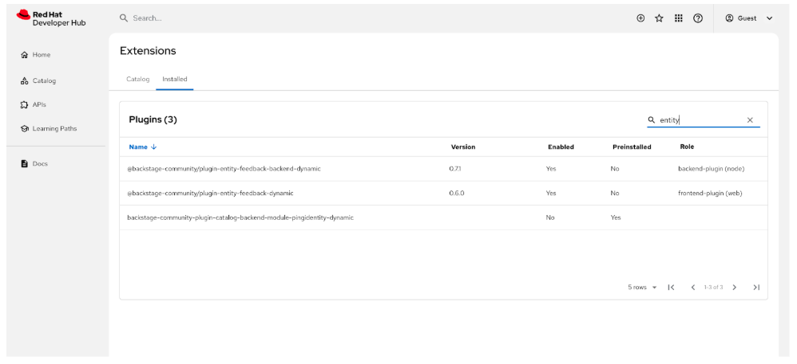
When you click Catalog, you should see the new Feedback tab, and the StarredRatingButtons displayed, as follows:
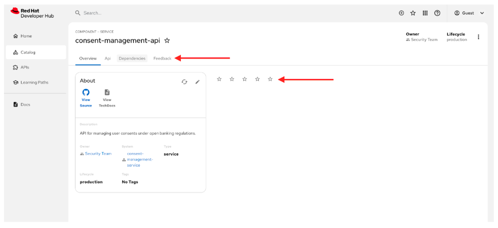
Selecting a low star rating prompts the user to offer feedback, as follows:
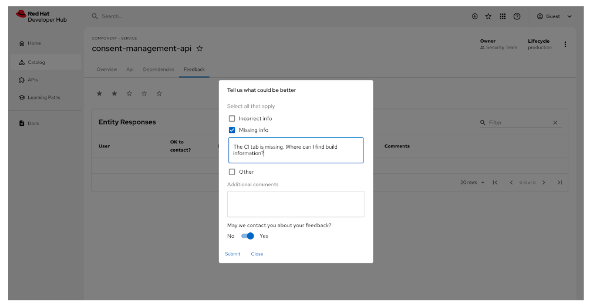
The system does not save user feedback if you log in as the Guest user.
4. Using the dynamic plugin factory to convert plugins into dynamic plugins
You can automate the conversion and packaging of standard Backstage plugins into RHDH dynamic plugins by using the RHDH Dynamic Plugin Factory tool.
Red Hat maintains the Dynamic Plugin Factory as an open source project, but does not support it or subject it to any service level agreement (SLA).
The core function of the Dynamic Plugin Factory tool is to streamline the dynamic plugin build process, offering the following capabilities:
- Source Code Handling
- Manages cloning, checking out, and applying custom patches to the plugin source.
- Dependency Management
- Handles yarn installation and TypeScript compilation.
- Packaging
- Uses the RHDH CLI to build, export, and package the final dynamic plugin.
- Deployment
- Offers an option to push the resulting container image to registries such as Quay or OpenShift.
The Dynamic Plugin Factory tool provides a simplified, reproducible method for developers and platform engineers to create and test dynamic plugins. Using a pre-configured dynamic plugin factory container and documentation, the tool significantly eases migration and testing.
Additional resources
5. Enable plugins added in the RHDH container image
The RHDH container image preinstalls a set of dynamic plugins to enhance functionality. However, due to mandatory configuration requirements, the image disables most of the plugins.
You can enable and configure the plugins in the RHDH container image. This includes how to manage the default configuration, set necessary environment variables, and ensure the proper functionality of the plugins within your application.
Since RHDH 1.10, the latest version of the dynamic-plugins.default.yaml file exists in the plugin catalog index container image.
To retrieve the latest version of the dynamic-plugins.default.yaml file, run the following commands in your terminal:
$ unpack () {
if [[ ! $1 ]]; then
echo "Usage: unpack reg/org/container:tagorsha [file(s)-to-unpack-pattern]"
echo "Example: unpack quay.io/rhdh/plugin-catalog-index:1.10 dynamic-plugins.default.yaml"
else
local FILES=""
if [[ $2 ]]; then FILES="$2"; fi
local IMAGE="$1"
local DIR="${IMAGE//:/_}"
DIR="/tmp/${DIR//\//-}"
rm -fr "$DIR"; mkdir -p "$DIR"; container_id=$(podman create "${IMAGE}")
podman export $container_id -o /tmp/image.tar && tar xf /tmp/image.tar -C "${DIR}/" $FILES; podman rm $container_id; rm -f /tmp/image.tar
echo "Unpacked $IMAGE into $DIR"
cd $DIR;
if [[ $FILES ]]; then ls -la $FILES; else tree -d -L 3 -I "usr|root|buildinfo"; fi
fi
}
$ unpack registry.access.redhat.com/rhdh/plugin-catalog-index:1.10 dynamic-plugins.default.yaml
# For a pre-GA CI container:
$ unpack quay.io/rhdh/plugin-catalog-index:1.10 dynamic-plugins.default.yaml
Alternatively, you can use an oci:// plugin reference, and the special {{inherit}} tag will fetch the latest compatible plugin, including its default configuration, for your current RHDH version.
Prerequisites
-
You have deployed the RHDH application, and have access to the logs of the
install-dynamic-pluginsinit container. - You have the necessary permissions to change plugin configurations and access the application environment.
- You have identified and set the required environment variables referenced by the plugin’s default configuration. You must define these environment variables in the Helm Chart or Operator configuration.
Procedure
-
Start your RHDH application and access the logs of the
install-dynamic-pluginsinit container within the RHDH pod. - Identify the Red Hat supported plugins that the system disables by default.
-
If you need to provide additional configuration for the plugin, other than enabling it, copy the package configuration from the
dynamic-plugins.default.yamlfile you extracted above. For plugins which require no configuration, you can simply reference the plugin and set it todisabled:falseas in the example below. -
To use the latest compatible plugin version, use the special tag
{{inherit}}; this will also load the default configuration, which you can then override. Open the plugin configuration file (Custom Resource or ConfigMap) and locate the plugin entry you want to enable.
The location of the plugin configuration file varies based on the deployment method. For more details, see Installing and viewing plugins in Red Hat Developer Hub.
-
Change the
disabledfield tofalseand add the package name as follows:
plugins:
- package: oci://registry.access.redhat.com/rhdh/backstage-community-plugin-analytics-provider-segment:{{inherit}}
disabled: falseor using the deprecated wrapper syntax:
plugins:
- package: './dynamic-plugins/dist/backstage-community-plugin-analytics-provider-segment'
disabled: falseFor more information about how to configure dynamic plugins in Developer Hub, see Configuring dynamic plugins.
Verification
- Restart the RHDH application and verify that the plugin is successfully activated and configured.
- Verify the application logs for confirmation and ensure the plugin is functioning as expected.
6. Extensions in Red Hat Developer Hub
Red Hat Developer Hub (RHDH) includes the Extensions feature, which comes preinstalled and enabled by default. The Extensions feature provides users with a centralized interface to browse and manage available plugins
You can use Extensions to discover plugins that extend RHDH functionality, streamline development workflows, and improve the developer experience.
These features are for Technology Preview only. Technology Preview features are not supported with Red Hat production service level agreements (SLAs), might not be functionally complete, and Red Hat does not recommend using them for production. These features provide early access to upcoming product features, enabling customers to test functionality and provide feedback during the development process.
For more information on Red Hat Technology Preview features, see Technology Preview Features Scope.
6.1. View available plugins
You can view available plugins for your Red Hat Developer Hub application on the Extensions page.
Procedure
- Open your RHDH application and click Administration > Extensions.
Go to the Catalog tab to view a list of available plugins and related information.
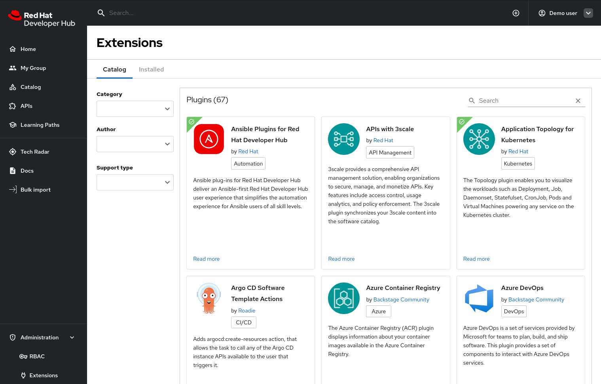
6.2. View installed plugins
Using the Dynamic Plugins Info front-end plugin, you can view plugins that your Red Hat Developer Hub application currently has installed. Red Hat Developer Hub enables the Dynamic Plugins Info plugin by default.
Procedure
- Open your Developer Hub application and click Administration > Extensions.
- Go to the Installed tab to view a list of installed plugins and related information.
6.3. Search for plugins by name
You can use the search bar in the header to filter the Extensions plugin cards by name. For example, if you type “A” into the search bar, Extensions shows only the plugins that contain the letter “A”.
Procedure
In the header search bar, enter a plugin name, such as "Dynatrace".
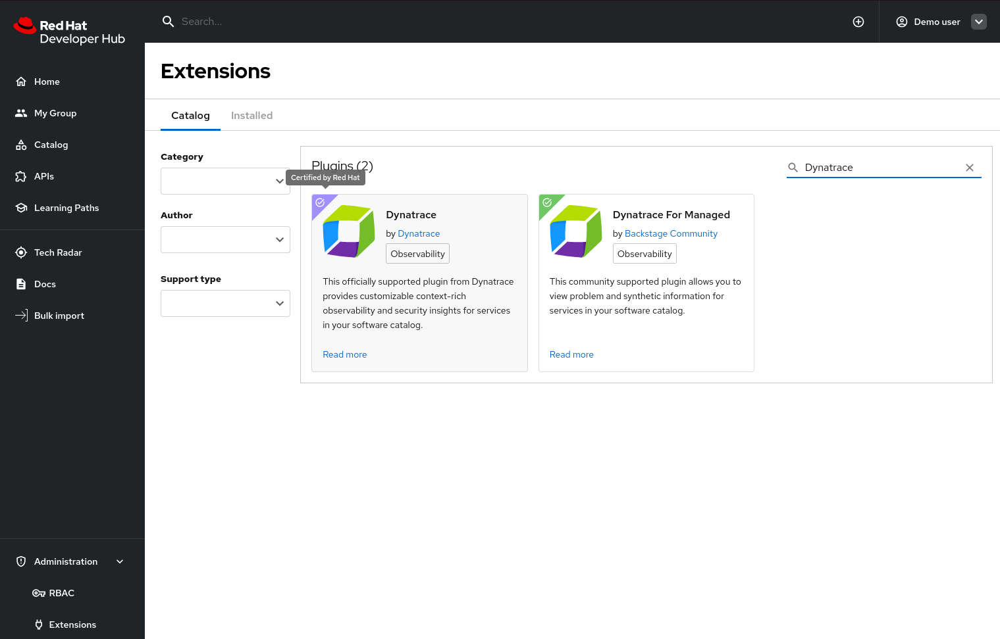
- Optional: Refine your search by selecting one of the following filters:
- Category
- Author
- Support type
Verification
- The Extensions list updates to display only the plugins that match your search text and selected filters.
6.4. Disable the Extensions interface
The Extensions feature is available by default. To remove the Extensions interface (Marketplace) from your instance, you must disable the relevant plugins.
Procedure
Edit your
dynamic-plugins.yamlwith the following content.plugins: - package: ./dynamic-plugins/dist/red-hat-developer-hub-backstage-plugin-extensions disabled: true - package: ./dynamic-plugins/dist/red-hat-developer-hub-backstage-plugin-catalog-backend-module-extensions-dynamic disabled: true - package: ./dynamic-plugins/dist/red-hat-developer-hub-backstage-plugin-extensions-backend-dynamic disabled: trueNoteDisabling these plugins removes the Catalog and Installed tabs. You can still view a basic list of installed plugins by selecting Administration > Extensions.
6.5. Manage plugins by using Extensions
Administrators can install and configure plugins directly through the Extensions interface.
This feature is supported in development environments only. In a production environment, the interface prevents plugin installation and is not supported.
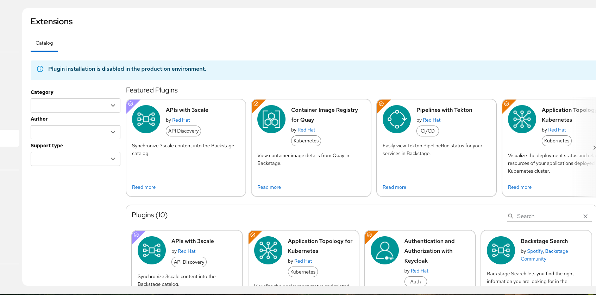
Procedure
- Navigate to Administration > Extensions.
- On the Catalog tab, select a plugin to install. You can use the default configuration or change it.
On the Installed tab, use the Actions menu on a plugin card to:
- Edit the configuration.
- Disable or enable the plugin.
- Restart the backend to apply your changes.
6.5.1. Configure RBAC to manage Extensions
You can add Extensions permissions by creating or updating and existing RBAC role. For more information about using RBAC to manage role-based controls, see Managing role-based access controls (RBAC) using the Red Hat Developer Hub Web UI.
Prerequisites
- You have enabled RBAC, have a policy administrator role in Developer Hub, and have added plugins with permission.
Procedure
Go to Administration at the bottom of the sidebar in the Developer Hub.
The RBAC tab is displayed, showing all the created roles in the Developer Hub.
- Click Create to create a role.
- Enter the user name and description (optional) of role in the given fields and click Next.
- In Add users and groups, select the user name, and click Next.
- In Add permission policies, select Extensions from the plugins dropdown.
- Expand Extensions, select both the Create and Read permissions for the Extensions plugin and click Next.
Click Create to create the role.
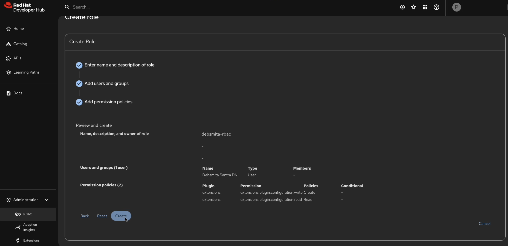
Verification
After you refresh the RHDH application, when you select a plugin, the Actions drop-down is active. When you click the Actions drop-down, you can edit the plugin configuration, and enable or disable the plugin.
6.5.2. Configure RHDH to install plugins by using Extensions
When you install a plugin using Extensions UI, the system saves the configuration to a persistent volume, preserving it across application restarts.
You must create a persistent volume claim (PVC) to ensure that the cache persists when you restart the RHDH application. For more information about using the dynamic plugins cache, see Using the dynamic plugins cache.
Prerequisites
- You have created a persistent volume claim (PVC) for the dynamic plugins cache with the name dynamic-plugins-root.
- You have installed Red Hat Developer Hub using the Helm chart or the Operator.
-
You have installed the OpenShift CLI (
oc).
Procedure
Create the extensions configuration file and save it as
dynamic-plugins.extensions.yaml. For example:includes: - dynamic-plugins.default.yaml plugins: - package: ./dynamic-plugins/dist/red-hat-developer-hub-backstage-plugin-extensions disabled: false pluginConfig: dynamicPlugins: frontend: red-hat-developer-hub.backstage-plugin-marketplace: translationResources: - importName: marketplaceTranslations ref: marketplaceTranslationRef module: Alpha appIcons: - name: pluginsIcon importName: PluginsIcon dynamicRoutes: - path: /extensions importName: DynamicMarketplacePluginRouter menuItem: icon: pluginsIcon text: Extensions textKey: menuItem.extensions menuItems: extensions: parent: default.admin - package: ./dynamic-plugins/dist/red-hat-developer-hub-backstage-plugin-extensions-backend-dynamic disabled: false pluginConfig: extensions: installation: enabled: true saveToSingleFile: file: /opt/app-root/src/dynamic-plugins-root/dynamic-plugins.extensions.yamlwhere:
translationResources- Sets the extension point for localization.
Copy the file to your cluster by running the following commands:
oc get pods -n <your_namespace> oc cp ./dynamic-plugins.extensions.yaml <your_namespace>/<pod_name>:/opt/app-root/src/dynamic-plugins-root/dynamic-plugins.extensions.yaml
Update your RHDH application to use this file:
For operator-based installations:
Update your Backstage CR to update the
NODE_ENVenvironment variable todevelopment, as follows:apiVersion: rhdh.redhat.com/v1alpha5 kind: Backstage metadata: name: developer-hub namespace: rhdh spec: application: dynamicPluginsConfigMapName: dynamic-plugins-rhdh extraEnvs: envs: - name: NODE_ENV value: "development" secrets: - name: secrets-rhdh extraFiles: mountPath: /opt/app-root/src route: enabled: true database: enableLocalDb: trueUpdate your
dynamic-plugins-rhdhconfig map to include your extensions configuration file, as follows:kind: ConfigMap apiVersion: v1 metadata: name: dynamic-plugins-rhdh namespace: rhdh data: dynamic-plugins.yaml: | includes: - dynamic-plugins.default.yaml - /dynamic-plugins-root/dynamic-plugins.extensions.yaml plugins: []
For Helm chart installations:
Upgrade the Helm release to include your extensions configuration file and update the
NODE_ENVenvironment variable todevelopment:global: auth: backend: enabled: true clusterRouterBase: apps.<clusterName>.com dynamic: includes: - dynamic-plugins.default.yaml - /dynamic-plugins-root/dynamic-plugins.extensions.yaml upstream: backstage: extraEnvVars: - name: NODE_ENV value: development- Click Upgrade
Verification
Enable a plugin by using the Extensions UI, restart your RHDH application, and refresh the UI to confirm that you enabled the plugin.
6.5.3. Configure RHDH Local to install plugins by using Extensions
You can use RHDH Local to test installing plugins by using Extensions.
Red Hat maintains RHDH Local as an open source project, but does not support it or subject it to any service level agreement (SLA).
Prerequisites
- You have installed RHDH Local. For more information about setting up RHDH Local, see Test locally with Red Hat Developer Hub.
Procedure
Update your
dynamic-plugins.override.yamlfile:includes: - dynamic-plugins.default.yaml plugins: - package: ./dynamic-plugins/dist/red-hat-developer-hub-backstage-plugin-extensions disabled: false pluginConfig: dynamicPlugins: frontend: red-hat-developer-hub.backstage-plugin-marketplace: translationResources: - importName: marketplaceTranslations ref: marketplaceTranslationRef module: Alpha appIcons: - name: pluginsIcon importName: PluginsIcon dynamicRoutes: - path: /extensions importName: DynamicMarketplacePluginRouter menuItem: icon: pluginsIcon text: Extensions textKey: menuItem.extensions menuItems: extensions: parent: default.admin - package: ./dynamic-plugins/dist/red-hat-developer-hub-backstage-plugin-extensions-backend-dynamic disabled: false pluginConfig: extensions: installation: enabled: true saveToSingleFile: file: /opt/app-root/src/configs/dynamic-plugins/dynamic-plugins.override.yamlwhere:
translationResources- Sets the extension point for localization.
Update your
compose.yamlfile:rhdh: container_name: rhdh environment: NODE_OPTIONS: "--inspect=0.0.0.0:9229" NODE_ENV: "development"
Verification
Enable a plugin by using the Extensions UI, restart your RHDH application, and refresh the UI to confirm that you enabled the plugin.
6.5.4. Install plugins by using Extensions
You can install and configure plugins by using Extensions.
Prerequisites
- You have configured RHDH to allow plugins installation from Extensions.
- You have configured RBAC to allow the current user to manage plugin configuration.
Procedure
- Navigate to Extensions.
- Select a plugin to install.
Click the Install button.
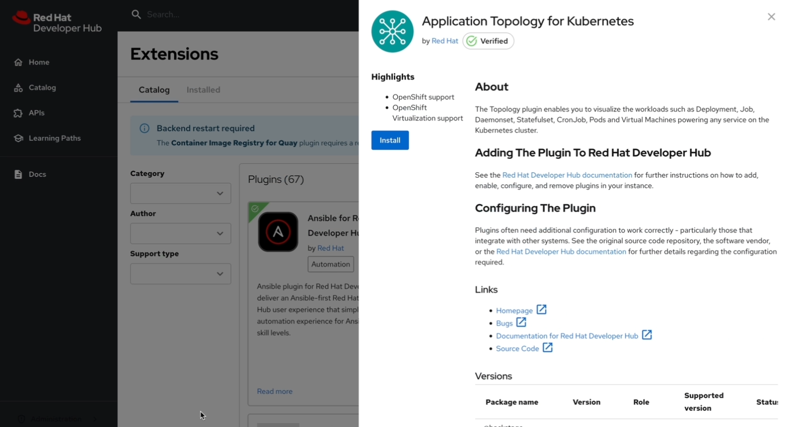
The code editor is displayed that displays the plugin default configuration.
Update the plugin configuration, if necessary.
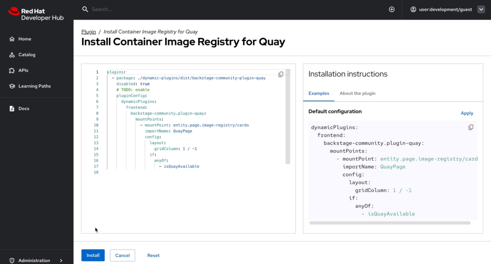
- Click Install
To view the plugins that require a restart, click View plugins in the alert message.
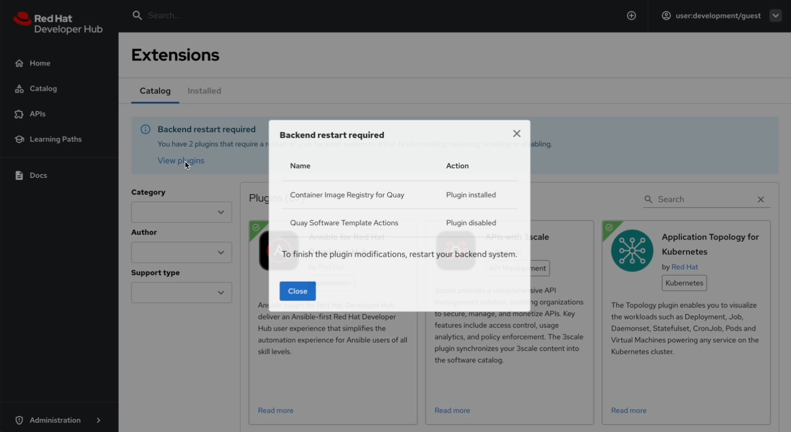
- Restart your RHDH application.
Verification
- After you restart your RHDH application, navigate to Extensions.
- Select the plugin that you have installed.
- The Actions button is displayed.
6.5.5. Enable and disable plugins by using Extensions
Use this procedure to enable or disable plugins through the Extensions interface.
Prerequisites
- You have configured RHDH to allow plugins installation from Extensions.
- You have configured RBAC to allow the current user to access to manage plugin configuration.
Procedure
- Navigate to Extensions.
- Select a plugin to enable or disable.
Click the Enable/Disable slider.
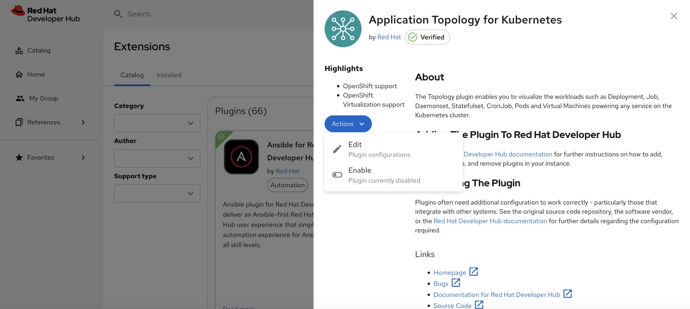
To view the plugins that require a restart, click View plugins in the alert message.
- Restart your RHDH application.
Verification
- After you restart your RHDH application, navigate to Extensions.
- Select the plugin that you have installed.
- Verify that the system updated the Enable/Disable slider.
7. Troubleshoot a pod startup failure after enabling a plugin
If the RHDH pod fails to start after enabling a plugin, you can inspect the pod logs and configure the required environment variables.
Procedure
Inspect your RHDH pod logs to identify if the plugin requires specific environment variables or additional configuration, for example:
Plugin '<PLUGIN_NAME>' threw an error during startup, waiting for X other plugins to finish before shutting down the process. Plugin '<PLUGIN_NAME>' startup failed; caused by Error: Missing required config value at '<concretePluginRequiredVariable.name>' in 'app-config.local.yaml' type="initialization"
-
Verify the required configuration by inspecting the
dynamic-plugins.default.yamlfile that lists the required environment variables for each plugin. The variables for each plugin are in the format of${PLUGIN_VARIABLE_NAME}. If any required environment variables are missing, set the environment variables by using a secret. For example:
kind: Secret apiVersion: v1 metadata: name: rhdh-secrets labels: backstage.io/kubernetes-id: developer-hub data: PLUGIN_VARIABLE_NAME: 'dummy-value' type: OpaqueMount the secret:
If you deployed RHDH by using the Operator, update your
BackstageCR, as follows:spec: application: extraEnvs: secrets: - name: rhdh-secretsIf you deployed RHDH by using the Helm chart, in the
upstream.backstagekey in your Helm chart values, enter the name of the Developer Hubrhdh-secretssecret as the value for theextraEnvVarsSecretsfield. For example:upstream: backstage: extraEnvVarsSecrets: - rhdh-secrets
8. Front-end plugin wiring
You can configure front-end plugins to customize icons, integrate components at mount points, and offer or replace utility APIs.
8.1. Understanding front-end plugin wiring
You can configure front-end plugins to customize icons, integrate components at mount points, and offer or replace utility APIs.
8.1.1. Front-end plugin wiring
Front-end plugin wiring integrates dynamic front-end plugin components, such as new pages, UI extensions, icons, and APIs, into Red Hat Developer Hub.
Because the dynamic plugins load at runtime, the core application must discover and connect the exported assets of the plugin to the appropriate user interface systems and locations.
8.1.1.1. Understand why front-end wiring is required
Because dynamic front-end plugins load their code at runtime, the Developer Hub application requires explicit instructions to integrate the plugin components in the user interface (UI).
Front-end wiring provides the metadata and instructions necessary to bridge this gap, informing the applications on how to:
-
Add new pages and routes to the main application. (using
dynamicRoutes) -
Inject custom components into existing UI pages. (using
mountPoints) -
Configure application-wide customizations, such as new icons or themes. (using
appIcons) -
Add new menu items. (using
menuItems) -
Bind to existing plugins. (using
routeBindings)
The wiring configuration, typically located in app-config.yaml or dynamic-plugins-config.yaml, gives the application the necessary metadata (including the component names, paths, and integration points) to render and use the plugin features.
8.1.1.2. Consequences of skipping front-end wiring
If you skip front-end wiring, the system discovers the plugin but does not load it because front-end plugins require explicit configuration.
You can expect the following behavior when you skip front-end wiring:
- Disabled functionality
- The Backstage application cannot integrate or use the plugin exports.
- Invisible components
- New pages, sidebar links, or custom cards do not render in the application UI.
- Unregistered APIs
- Custom utility APIs or API overrides provided by the plugin are not registered in the application API system, which can cause plugins or components to fail.
- Unused assets
- Icons, translations, and themes are not registered or available for use.
If a plugin is not visible even with front-end wiring, the plugin is likely misconfigured. Troubleshoot the issue by checking the Console tab in the Developer Tools of your browser for specific error messages or warnings.
8.1.1.3. Dynamic front-end plugins for application use
A dynamic front-end plugin requires front-end wiring when it exports a feature for integration into the main Backstage application UI. The following scenarios require wiring:
| Scenario | Wiring configuration | Description |
|---|---|---|
|
|
Add or customize a tab on the Catalog entity view. | |
|
|
Link a route in one plugin to an external route defined by another plugin. | |
|
|
Supply a custom utility API implementation or override an existing one. | |
|
|
Add a new page and route to the application (for example, | |
|
|
Inject custom widgets, cards, listeners, or providers into existing pages (for example, the Catalog entity page). | |
|
|
Add a new entry to the main sidebar or customize its order and nesting. | |
|
|
Add custom icons to the application catalog or define a new Backstage theme. | |
|
|
Expose custom field extensions for the Scaffolder or new add-ons for TechDocs. | |
|
|
Offer new translation files or override default plugin translations. |
8.1.1.3.1. Example of Front-end wiring workflow
Front-end wiring configuration occurs in the app-config.yaml or a dedicated dynamic-plugins-config.yaml file. The dynamic plugin exposes components, routes, or APIs. For example, a module (for example, PluginRoot) exports a plugin component (FooPluginPage).
The application administrator defines the wiring in the configuration file, using the plugin package name to register the exports, such as adding a new page with a sidebar link.
# dynamic-plugins-config.yaml
plugins:
- plugin: <plugin_path_or_url>
disabled: false
pluginConfig:
dynamicPlugins:
frontend:
my-plugin-package-name: # The plugin's unique package name
dynamicRoutes: # Wiring for a new page/route
- path: /my-new-page # The desired URL path
importName: FooPluginPage # The exported component name
menuItem: # Wiring for the sidebar entry
icon: favorite # A registered icon name
text: My Custom PageWhen the application loads, it performs the following steps:
-
It parses the
dynamic-plugins-config.yaml. -
It uses the
<plugin_path_or_url>to download the plugin bundle using the dynamic loading mechanism. -
If the package exports the plugin object, the application adds it to the list provided to the Backstage
createAppAPI, registering the plugin properly with the front-end application. It uses the configuration block (
dynamicRoutes,menuItem) to:-
Add an entry to the internal router mapping
/my-new-pageto theFooPluginPagecomponent. -
Construct and render a new sidebar item labeled My Custom Page, pointing to the
/my-new-pageroute.
-
Add an entry to the internal router mapping
If the configuration is missing, steps 1 and 2 might still occur, but the application skips the final registration in step 3 and the wiring/rendering in step 4, and no UI changes occur.
8.2. Extend internal icon catalog
You can use the internal catalog to fetch icons for configured routes with sidebar navigation menu entry.
Procedure
Add a custom icon to the internal icon catalog for use in the menu item of a plugin by using the
appIconsconfiguration as shown in the following example:# dynamic-plugins-config.yaml plugins: - plugin: <plugin_path_or_url> disabled: false pluginConfig: dynamicPlugins: frontend: my-plugin: # The plugin package name appIcons: - name: <catalogName> # The icon catalog name # (Optional): The set of assets to access within the plugin. If not specified, the system uses the
PluginRootmodule. module: CustomModule # (Optional): The actual component name to be rendered as a standalone page. If not specified, the system uses thedefaultexport. importName: <CustomIcon>NoteThe
package_namekey underdynamicPlugins.frontendmust match thescalprum.namevalue in your plugin’spackage.json. This ensures your dynamic plugin loads correctly during runtime.
8.3. Define dynamic routes for new plugin pages
Use this procedure to configure dynamic routes for new plugin pages in the application.
Procedure
-
Define each route by specifying a unique
pathand, if needed, animportNameif it is different from thedefaultexport. Expose additional routes in a dynamic plugin by configuring
dynamicRoutesas shown in the following example:# dynamic-plugins-config.yaml plugins: - plugin: <plugin_path_or_url> disabled: false pluginConfig: dynamicPlugins: frontend: my-plugin: # The plugin package name dynamicRoutes: # The unique path in the application. The path cannot override existing routes except the
/home route. - path: /my-plugin # (Optional): The set of assets to access within the plugin. If not specified, the system uses thePluginRootmodule. module: CustomModule # (Optional): The component name as a standalone page. If not specified, the system uses thedefaultexport. importName: <my_plugin>PluginPage # Allows you to extend the main sidebar navigation and point to a new route. menuItem: icon: # home | group | category | extension | school | <my_icon> text: <my-plugin label> enabled: false config: # (Optional): Passespropsto a custom sidebar item props: ...The
menuItemaccepts the following properties:-
text: The label shown to the user. -
icon: The Backstage system icon name. -
enabled: Optional: When you set this to false, you can remove a menuItem from the sidebar. importName: Specifies the optional name of an exportedSidebarItemcomponent.To configure a custom
SidebarItemto enhance experiences such as notification badges, ensure the component accepts the following properties:export type MySidebarItemProps = { to: string; // supplied by the sidebar during rendering, this will be the path configured for the dynamicRoute };# dynamic-plugins-config.yaml plugins: - plugin: <plugin_path_or_url> disabled: false pluginConfig: dynamicPlugins: frontend: my-dynamic-plugin-package-name: dynamicRoutes: - importName: CustomPage menuItem: config: props: text: Click Me! importName: SimpleSidebarItem path: /custom_page
8.5. Binding to existing plugins
You can bind to existing plugins and their routes, and declare new targets sourced from dynamic plugins as shown in the following routeBindings configuration:
# dynamic-plugins-config.yaml plugins: - plugin: <plugin_path_or_url> disabled: false pluginConfig: dynamicPlugins: frontend: my-plugin: routeBindings: targets: - name: <plugin_name>Plugin importName: <plugin_key>Plugin module: CustomModule bindings: - bindTarget: "<plugin_name>Plugin.externalRoutes" bindMap: headerLink: "<plugin_name>Plugin.routes.root"
where:
my-plugin- The plugin package name.
targets- A new bind target.
name-
Optional: Defaults to
importName. Explicit name of the plugin that exposes the bind target. importName-
Required: Explicit import name that references a
BackstagePlugin<{}>implementation. module-
Optional: Same as the key in
scalprum.exposedModulesin thepackage.jsonfile of the plugin. bindTarget- Required: One of the supported or imported bind targets.
bindMap-
Required: A map of route bindings similar to
bindfunction options.
To configure routeBindings, complete the following steps:
-
Define new targets using
routeBindings.targets. Set the requiredimportNameto aBackstagePlugin<{}>implementation. Declare route bindings using the
routeBindings.bindingsfield by settingbindTargetto the name of the target to bind to. This is a dynamic or static target, such as:-
catalogPlugin.externalRoutes -
catalogImportPlugin.externalRoutes -
techdocsPlugin.externalRoutes scaffolderPlugin.externalRoutesYou can extend existing pages with additional content by using mount points. The application defines these identifiers throughout the system.
-
8.6. Using mount points
Mount points let you attach UI components to predefined locations in the Red Hat Developer Hub interface, such as entity pages, application headers, listeners, and providers.
8.6.1. Using mount points
Red Hat Developer Hub defines mount points as identifiers available across the application. You can use these points to extend existing pages with additional content.
8.6.1.1. Customizing entity page
You can extend catalog components and additional views.
The available mount points include the following:
| Mount point | Description | Visible even when you enable no plugins |
|---|---|---|
|
|
Administration plugins page |
NO |
|
|
Administration RBAC page |
NO |
|
|
Catalog entity menu |
YES for all entities |
|
|
Catalog entity overview page |
YES for all entities |
|
|
Catalog entity Topology tab |
NO |
|
|
Catalog entity Issues tab |
NO |
|
|
Catalog entity Pull Requests tab |
NO |
|
|
Catalog entity CI tab |
NO |
|
|
Catalog entity CD tab |
NO |
|
|
Catalog entity Kubernetes tab |
NO |
|
|
Catalog entity Image Registry tab |
NO |
|
|
Catalog entity Monitoring tab |
NO |
|
|
Catalog entity Lighthouse tab |
NO |
|
|
Catalog entity API tab |
YES for entity of |
|
|
Catalog entity Dependencies tab |
YES for entity of |
|
|
Catalog entity Documentation tab |
YES for entity that satisfies |
|
|
Catalog entity Definitions tab |
YES for entity of |
|
|
Catalog entity Diagram tab |
YES for entity of |
|
|
Search result type |
YES, default catalog search type is available |
|
|
Search filters |
YES, default catalog kind and lifecycle filters are visible |
|
|
Search results content |
YES, default catalog search is present |
Mount points within a catalog such as entity.page. render as tabs and become visible only if at least one plugin contributes to them, or if they can render static content.
Each entity.page. mount point has the following variations:
-
/contexttype that serves to create React contexts -
/cardstype for regular React components
The following is an example of the overall configuration structure of a mount point:
# dynamic-plugins-config.yaml plugins: - plugin: <plugin_path_or_url> disabled: false pluginConfig: dynamicPlugins: frontend: my-plugin: # The plugin package name mountPoints: # (Optional): Uses existing mount points - mountPoint: <mountPointName>/[cards|context] module: CustomModule importName: <pluginName>PluginPage config: # (Optional): Allows you to pass additional configuration to the component layout: {} # Used only in/cardstype which renders visible content # Use only in/cardstype which renders visible content.ifis passed to<EntitySwitch.Case if={<here>}. if: allOf|anyOf|oneOf: - isMyPluginAvailable - isKind: component - isType: service - hasAnnotation: annotationKey props: {} # Useful when you are passing additional data to the component
The available conditions include:
-
allOf: The configuration must meet all conditions -
anyOf: The configuration must meet at least one condition -
oneOf: The configuration must meet only one condition
Conditions are:
-
isKind: Accepts a string or a list of string with entity kinds. For exampleisKind: componentrenders the component only for entity ofkind: Component. -
isType: Accepts a string or a list of string with entity types. For exampleisType: servicerenders the component only for entities ofspec.type: 'service'. -
hasAnnotation: Accepts a string or a list of string with annotation keys. For examplehasAnnotation: my-annotationrenders the component only for entities that have definedmetadata.annotations['my-annotation']. -
Condition imported from the
moduleof the plugin: Must be function name exported from the samemodulewithin the plugin. For exampleisMyPluginAvailablerenders the component only ifisMyPluginAvailablefunction returnstrue. The function must have the following signature:(e: Entity) ⇒ boolean.
The entity page supports adding more items to the menu at the top right of the page. The exported component is a form of dialog wrapper component that accepts an open boolean property and an onClose event handler property as shown in the following example:
export type SimpleDialogProps = {
open: boolean;
onClose: () => void;
};
You can configure the menu entry by using the props configuration entry for the mount point. The title and icon properties sets the text and icon of the menu item. You can use any system icon or icon added through a dynamic plugin. The following is an example configuration:
# dynamic-plugins-config.yaml
plugins:
- plugin: <plugin_path_or_url>
disabled: false
pluginConfig:
dynamicPlugins:
frontend:
my-dynamic-plugin-package:
appIcons:
- name: dialogIcon
importName: DialogIcon
mountPoints:
- mountPoint: entity.context.menu
importName: SimpleDialog
config:
props:
title: Open Simple Dialog
icon: dialogIcon8.6.1.2. Adding application header
You can customize global headers by specifying configurations in the app-config.yaml file as shown in the following example:
# app-config.yaml
dynamicPlugins:
frontend:
my-plugin: # The plugin package name
mountPoints:
- mountPoint: application/header # Adds the header as a global header
importName: <header_component> # Specifies the component exported by the global header plugin
config:
position: above-main-content # Supported values: (`above-main-content`| above-sidebar`)
To configure many global headers at different positions, add entries to the mountPoints field.
8.6.1.3. Adding application listeners
You can add application listeners by using the application/listener mount point as shown in the following example:
# app-config.yaml
dynamicPlugins:
frontend:
my-plugin: # The plugin package name
mountPoints:
- mountPoint: application/listener
importName: <exported listener component>
You can configure many application listeners by adding entries to the mountPoints field.
8.6.1.4. Adding application providers
You can add application providers by using the application/provider mount point. You can use a mount point to configure a context provider as shown in the following example:
# app-config.yaml
dynamicPlugins:
frontend:
my-plugin: # The plugin package name
dynamicRoutes:
- path: /<route>
importName: Component # The component to load on the route
mountPoints:
- mountPoint: application/provider
importName: <exported provider component>-
You can configure many application providers by adding entries to the
mountPointsfield. -
The
package_namekey underdynamicPlugins.frontendmust match thescalprum.namevalue in thepackage.jsonfile of your plugin. This ensures your dynamic plugin loads correctly at runtime.
8.7. Customizing and extending entity tabs
You can customize and extend the set of tabs by using the entityTabs configuration as follows:
# dynamic-plugins-config.yaml
plugins:
- plugin: <plugin_path_or_url>
disabled: false
pluginConfig:
dynamicPlugins:
frontend:
my-plugin: # The plugin package name
entityTabs:
# Specify a new tab
- path: /new-path
title: My New Tab
mountPoint: entity.page.my-new-tab
# Change an existing tab's title or mount point
- path: /
title: General
mountPoint: entity.page.overview
# Specify the sub-path route in the catalog where this tab is available
- path: "/pr"
title: "Changed Pull/Merge Requests" # Specify the title you want to display
priority: 1
# The base mount point name available on the tab. This name expands to create two mount points per tab, with` /context` and with `/cards`
mountPoint: "entity.page.pull-requests"
- path: "/"
title: "Changed Overview"
mountPoint: "entity.page.overview"
# Specify the order of tabs. The tabs with higher priority values appear first
priority: -6You can configure dynamic front-end plugins to target the mount points exposed by the entityTabs configuration. The following are the default catalog entity routes in the default order:
| Route | Title | Mount Point | Entity Kind |
|---|---|---|---|
|
|
Overview |
|
Any |
|
|
Topology |
|
Any |
|
|
Issues |
|
Any |
|
|
CPull/Merge Requests |
|
Any |
|
|
CI |
|
VAny |
|
|
CD |
|
Any |
|
|
Kubernetes |
|
Any |
|
|
Image Registry |
|
Any |
|
|
Monitoring |
|
Any |
|
|
Lighthouse |
|
Any |
|
|
Api |
|
kind: Service or kind: Component |
|
|
Dependencies |
|
kind: Component |
|
|
Docs |
|
Any |
|
|
Definition |
|
kind: API |
|
|
Diagram |
|
kind: System |
Mount points within Catalog such as `entity.page.*` render as tabs and become visible only if at least one plugin contributes to them, or if they can render static content.
8.8. Using a custom SignInPage component
In Red Hat Developer Hub (RHDH), the SignInPage component manages authentication flow. By default, Developer Hub uses a static SignInPage.
When you configure a custom SignInPage:
-
The system loads the specified
importNamecomponent from your dynamic plugin. -
The component returns a configured
SignInPagethat connects the required authentication provider factories. -
You specify only one
signInPagefor the application at a time.
dynamicPlugins:
frontend:
my-plugin: # The plugin package name
signInPage:
importName: CustomSignInPage
The package_name specified under dynamicPlugins.frontend must match the scalprum.name value in the package.json file of your plugin to ensure the dynamic plugin loads correctly at runtime.
The module field is optional and specifies the set of assets that you must access within the dynamic plugin. By default, the system uses the PluginRoot module.
8.9. Providing custom Scaffolder field extensions
With the Scaffolder component in Red Hat Developer Hub (RHDH), you can create software components by using templates through a guided wizard. You can extend the functionality of the Scaffolder by adding custom form fields as dynamic plugins by using the scaffolderFieldExtensions configuration.
With custom field extensions, you can add specialized form fields that capture domain-specific data during the scaffolding process, such as environment selectors, input validations, or repository checks.
When you configure custom Scaffolder field extensions:
-
The dynamic plugin exposes the field extension component using
createScaffolderFieldExtension. -
Each field extension requires a unique
importNamefor registration. - You register many field extensions by listing each in the configuration.
dynamicPlugins:
frontend:
my-plugin: # The plugin package name
scaffolderFieldExtensions:
- importName: MyNewFieldExtension # References the exported Scaffolder field extension component from your plugin
The module field is optional and specifies which set of assets to access within the plugin. By default, the system uses the PluginRoot module, consistent with the scalprum.exposedModules key in the package.json file of your package.
8.10. Providing additional utility APIs
If a dynamic plugin exports the plugin object returned by createPlugin, the createApp API receives it. All API factories exported by the plugin are automatically registered and available in the front-end application.
You can add an entry to the dynamicPlugins.frontend configuration when a dynamic plugin has only API factories as shown in the following example:
# app-config.yaml
dynamicPlugins:
frontend:
my-dynamic-plugin-package-with-api-factories: {}
However, when the dynamic plugin is not exporting the plugin object, you must explicitly configure each API factory. Use the apiFactories configuration to register them with the createApp API as shown in the following example:
# app-config.yaml
dynamicPlugins:
frontend:
my-plugin: # The plugin package name
apiFactories:
# (Optional): Specify the import name that references a `AnyApiFactory<{}>` implementation. (Defaults to `default` export)
- importName: BarApi
# (Optional): An argument which specifies the assets you want to access within the plugin. If not provided, the default module named `PluginRoot` is used
module: CustomModule
An API factory from a dynamic plugin overrides the API factories that the Developer Hub application initializes when both specify the same API ref ID. A dynamic plugin can export AnyApiFactory<{}> to cater for some specific use case as shown in the following example:
export const customScmAuthApiFactory = createApiFactory({
api: scmAuthApiRef,
deps: { githubAuthApi: githubAuthApiRef },
factory: ({ githubAuthApi }) =>
ScmAuth.merge(
ScmAuth.forGithub(githubAuthApi, { host: "github.someinstance.com" }),
ScmAuth.forGithub(githubAuthApi, {
host: "github.someotherinstance.com",
}),
),
});
The corresponding configuration that overrides the default ScmAuth API factory that Developer Hub defaults to is as shown in the following example:
dynamicPlugins:
frontend:
my-plugin: # The plugin package name
apiFactories:
- importName: customScmAuthApiFactory8.11. Adding custom authentication provider settings
You can install new authentication providers from a dynamic plugin that either adds additional configuration support for an existing provider or adds a new authentication provider. The user settings section lists these providers under the Authentication Providers tab.
You can use the providerSettings configuration to add entries for an authentication provider from a dynamic plugin, as shown in the following example:
dynamicPlugins:
frontend:
my-plugin: # The plugin package name
providerSettings:
# The title for the authentication provider shown above the user's profile image if available
- title: My Custom Auth Provider
# The description of the authentication provider
description: Sign in using My Custom Auth Provider
# The ID of the authentication provider as provided to the `createApiRef` API call.
provider: core.auth.my-custom-auth-provider
provider looks up the corresponding API factory for the authentication provider to connect the provider’s Sign In/Sign Out button.
8.12. Providing custom TechDocs add-ons
If a plugin provides many add-ons, each techdocsAddon entry specifies a unique importName corresponding to the add-on. Front-end plugins expose the TechDocs add-on component by using the techdocsAddons configuration as shown in the following example:
dynamicPlugins:
frontend:
my-plugin: # The plugin package name
techdocsAddons:
- importName: ExampleAddon # The exported add-on component
config:
props: ... # (Optional): React props to pass to the add-on8.13. Customizing Red Hat Developer Hub theme
You can customize Developer Hub themes from a dynamic plugin with various configurations as shown in the following example:
import { lightTheme } from './lightTheme';
import { darkTheme } from './darkTheme';
import { UnifiedThemeProvider } from '@backstage/theme';
export const lightThemeProvider = ({ children }: { children: ReactNode }) => (
<UnifiedThemeProvider theme={lightTheme} children={children} />
);
export const darkThemeProvider = ({ children }: { children: ReactNode }) => (
<UnifiedThemeProvider theme={darkTheme} children={children} />
);For more information about creating a custom theme, see creating a custom theme.
You can declare the theme by using the themes configuration as shown in the following example:
dynamicPlugins:
frontend:
my-plugin: # The plugin package name
themes:
# are `light` or `dark`. Using 'light' overrides the app-provided light theme
- id: light
title: Light
variant: light
icon: someIconReference
importName: lightThemeProvider
# The theme name displayed to the user on the *Settings* page. Using 'dark' overrides the app-provided dark theme
- id: dark
title: Dark
variant: dark
icon: someIconReference # A string reference to a system or app icon
# The name of the exported theme provider function, the function signature should match `({ children }: { children: ReactNode }): React.JSX.Element`
importName: darkThemeProvider9. Use plugin indicators and support types in the Red Hat Developer Hub
Understanding plugin indicators and support types is crucial for effectively using the Red Hat Developer Hub.